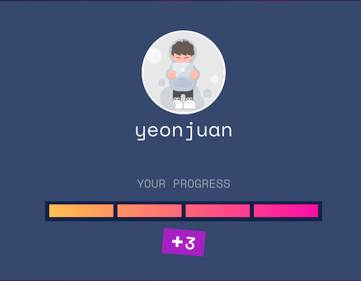
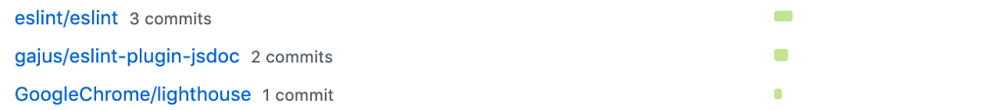
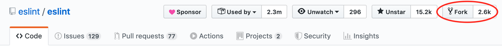
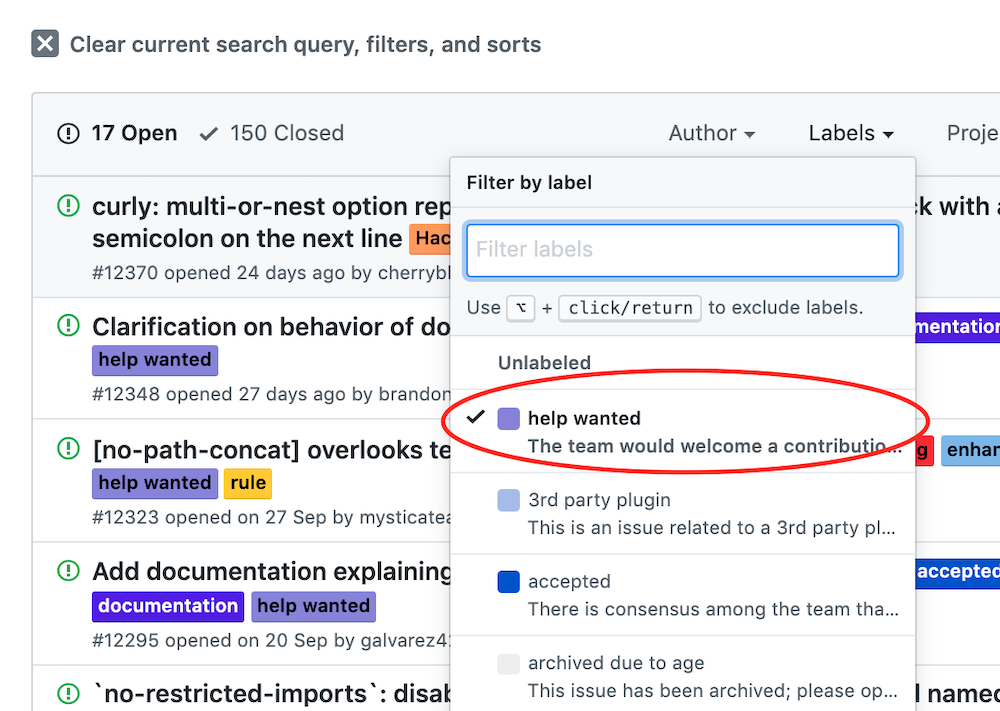

Hacktoberfest 2019 참가 후기

Hacktoberfest 2019
우연히 DigitalOcean에서 주최하는 Hacktoberfest라는 행사를 알게 되었습니다. Hacktoberfest는 매년 10월(October)에 열리는 행사로 이번에 6회 차를 맞이하였습니다.
오픈소스에 PR을 4번 이상하게 되면 티셔츠를 주는 행사로 Github 계정이 있다면 참여하실 수 있습니다. PR을 해야 하는 정해진 레포는 없습니다. 즉 어떤 저장소에나 PR을 해도 되지만, 이번 기회에 평소에 업무를 하며 자주 사용해본 오픈소스에 기여해봐야겠다고 생각했습니다.
행사에 참여한 뒤 오픈소스에 기여한 경험을 정리해 보았습니다.
기여한 프로젝트

총 3개의 프로젝트에 7개 PR을 날렸고, 그중에 6개가 머지되었습니다. 주로 사소한 버그나, 작은 기능 추가를 하였습니다. 기여할 프로젝트로 스타가 많은 유명한 프로젝트들을 선정해도 되지만, 개인적으로 평소 잘 모르던 프로젝트에 기여하려니 지식도 없고 어떻게 시작해야 할지 감도 잘 안 왔던 것 같습니다. 그래서, 최근에 업무 중에 사용해보았거나 리서치해본 프로젝트 위주로 기여를 시도했습니다.
ESLint이 프로젝트는 JavaScript의 린팅 툴로 개발단계에서 일관된 코드 스타일, 버그 등을 찾아내기 위해 쓰입니다.
기여한 내용
함수 매개변수 comma-dangle 옵션 적용 keyword-spacing에서 기본값이 옵션을 덮는 문제 정규식이 코멘트 내에 개행을 검출하고 있던 문제 주로 사소한 버그를 수정했습니다. 막상 수정한 코드는 한 줄에서 두줄 정도이고 테스트 케이스를 훨씬 많이 추가했습니다. 주로 리뷰로 받은 피드백도 테스트 케이스를 더 추가해달라는 부분이었는데 다양한 옵션에서 테스트 케이스가 필요하다던 가, 추후 이 수정을 다른 사람이 잘못 수정하지 못하도록 방어하는 테스트 케이스를 요구받았습니다.
hacktoberfest 행사를 고려해서 Hacktoberfest라는 라벨을 만들어 두었는데, 주로 이 라벨이 달려있던 이슈들을 보고 해결할만한 것을 찾았습니다. 커밋 메시지에 대한 규칙이 빡빡하게 정해져 있어서 적당하게 메시지를 짓는 데에 어려움을 많이 겪었던 것 같습니다.
ESLint-plugin-jsdoc이 프로젝트는 JSDOC 형태의 코멘트를 사용할 때 빠진 부분은 없는지 잘못된 포맷은 없는지를 검사해주는 eslint의 플러그인입니다.
기여한 내용
require-param fixer 추가
추가한 fixer 리팩터링
eslint 에는 eslint --fix와 같이 실행 시 자동으로 린트에 걸리는 부분을 수정해주는 autofix 기능이 있습니다. 그리고 내부적으로 그 기능을 수행하는 로직을 Fixer라고 부릅니다. eslint-plugin-jsdoc 에도 Fixer가 있는데, 저는 JSDOC 에다가 매개 변수 항목을 넣지 않았을 때 자동으로 추가해 주는 코드를 추가했습니다. 아직 destructuring 형태의 매개변수에 대해서는 기능을 지원을 하고 있지 않은데, 추후에 시간이 나면 도전해봐야겠습니다.
Lighthouse이 프로젝트는 웹 성능을 측정하는 툴로서 성능을 저하시키거나 SEO, 웹 접근성에 대해 충고해주는 역할을 합니다. 웹 성능 측정과 관련한 업무를 하며 알게 된 오픈소스입니다.
기여한 내용
SEO link-text audit에 한국어 지원 추가 이 프로젝트에서는 SEO에 link 가 달린 텍스트에 의미 있는 설명을 쓰는지 검출하는 audit이 있는데, 그 audit에 한국말을 지원할 수 있도록 추가하였습니다. 일본어, 프랑스어도 있길래, 설마 받아주겠어 라는 느낌으로 PR을 했는데 쉽게 받아들여졌습니다. 번역과 관련한 부분은 다소 너그럽지 않나..라는 생각이 들었습니다.
기여한 방법
오픈소스의 사소한 버그 수정으로 기여하는 방법에 대해 나름 정리해보았습니다.
프로젝트 찾기
사용해보았거나 리서치를 했던 오픈소스를 선택하는 것이 그나마 진입장벽이 낮았던 것 같습니다. 프로젝트를 찾으면 Fork 후, 프로젝트를 로컬로 내려받고 빌드합니다.

기여할 이슈 찾기
프로젝트의 이슈 목록을 보면, help wanted와 같은 라벨이 붙어있는데, 메인테이너가 다른 사람의 PR을 원하는 것을 의미합니다. 주로 사소한 버그 수정이나 문서 수정이고, 버그 수정의 경우, 잇슈 내용을 통해 어떤 입력에서 어떤 결과가 나와야 한다는 것을 파악할 수 있습니다.

테스트 케이스 추가
이슈를 살펴서 버그가 수정된다면 적용되어야 할 테스트 케이스를 먼저 작성합니다. 이후 테스트를 돌리면, 추가한 테스트 케이스에 대해 실패하는 것 까지 확인합니다. 테스트를 돌리는 방법은 주로 문서에 나와있거나, npm을 이용하는 프로젝트의 경우 package.json의 scripts 부분을 보면 쉽게 알 수 있습니다.
코드 수정
해당 이슈를 해결하기 위해 코드를 분석하고, 수정합니다. 수정한 뒤 테스트를 돌려 통과하면 다른 경우에 대해서 테스트 케이스를 추가합니다. Code Coverage 수치가 떨어졌다면 변경된 코드에서 테스트 케이스가 커버하지 못하는 경우가 있는지 확인하면서 추가합니다.
커밋, PR
프로젝트의 CONTRIBUTE.md를 보고 커밋 메시지, PR 가이드를 보고 가이드에 맞게 커밋합니다. 이후 리뷰가 달리면 리뷰에 따라 수정하거나 메인테이너의 질문에 답변하며 머지되기를 기다립니다. 혹 규칙에 맞지 않게 커밋해 둔 경우 git rebase -i명령어를 통해 수정합니다.
느낀 점
뿌듯함
실제 커밋한 코드를 보면 사소한 버그 수정, 기능 추가 들입니다. 하지만 많은 사람들이 사용하는 오픈소스에 기여했다는 뿌듯함을 느낄 수 있었습니다. 대학생 때는 오픈소스에 기여하는 게 마냥 어렵게만 느껴졌는데, 이번에 참여를 해보니 생각보다 저 같은 초보자도 참여할 수 있는 부분이 있다는 것을 알게 되었습니다. 전체 구조를 바꾸거나 완전히 새로운 기능을 추가하는 데에는 시간과, 높은 실력이 필요할 것 같지만, 사소한 버그나 번역, 작은 기능 추가는 누구든지 할 수 있을 것 같다고 생각합니다.
네이밍과 주석
주로 코드를 넣는 시간보다, 코드를 보고 파악하는 시간이 더 길었던 것 같습니다. 하지만 서술적으로 잘 작성되어 있는 함수명과, 변수명 덕분에 이 함수는 이 기능을 할 거야 라는 추측이 대부분 맞았고, 애매한 경우에도 주석으로 코드에 대한 설명이 잘 달려있어서 파악하기 용이했던 것 같습니다. 다른 사람이 제 코드를 볼 때도 이런 기분을 느끼게 하기 위해 앞으로 코딩할 때 네이밍을 좀 더 고민해서 해봐야겠습니다.
테스트
많은 테스트 케이스가 작성되어있으니, 이 수정으로 인해 다른 문제가 생기지 않을까 하는 부분을 보장받는 것 같아 테스트 코드의 중요성을 알게 되었습니다. 테스트를 통과하면 기존에 커버하고 있던 기능에 영향을 안 주고 있다는 어느 정도의 안심을 할 수 있게 되는 것 같습니다. 또한 테스트 케이스 추가를 통해 현재 변경한 사항을, 추후에 누군가 또 변경할 때 주의하도록 할 수 있는 역할도 있다는 것을 알게 되었습니다.
영어
영어 실력이 좀 더 좋았다면, PR 메시지에 이 수정이 올바르다는 것을 좀 더 잘 설명할 수 있었을 것 같습니다. 코드를 보고 메인테이너가 다시 이해하는 수고를 좀 더 줄일 수 있지 않았을까 싶습니다.